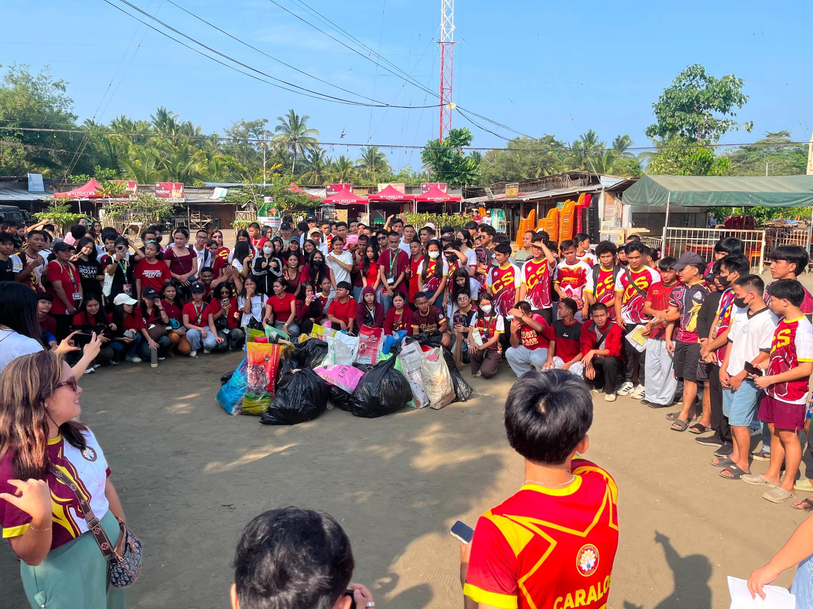
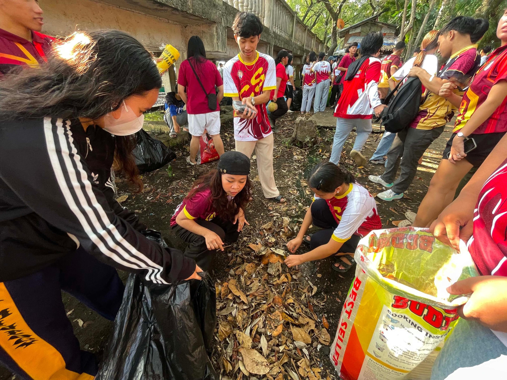
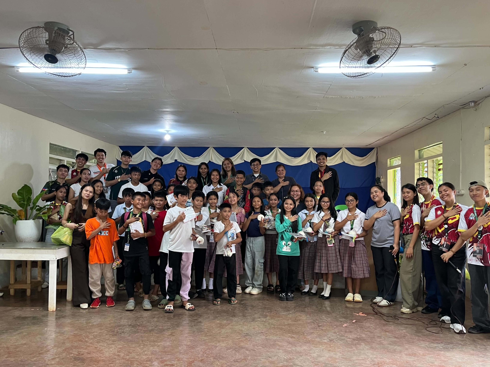

COMMUNITY
Serving with Purpose, Inspiring Change, and Building a Better Tomorrow.
Making a Difference in the Community
Extending kindness beyond the classroom
Being part of Institue of Computer Studies and a student of TCGC has taught me that education is not only about academic achievements but also about developing a heart that is willing to serve others. Through community service, I learned the importance of compassion, cooperation, and responsibility.
Our activities allow us to share our time, effort, and knowledge with others while creating meaningful experiences that help strengthen our connection with the community.
Our Community Activities
Small actions, meaningful impact
Environmental Clean-Up
We participated in cleaning the surroundings and collecting waste to promote environmental awareness and encourage everyone to maintain a cleaner and healthier community.
Community Outreach
Through outreach activities, we shared our time, care, and support with members of the community, especially young learners who deserve encouragement and attention.
Unity and Volunteerism
Working together with fellow students taught us that teamwork and volunteerism can create positive changes and strengthen the bond between our school and community.
Our Community in Action
Memories of service, unity, and compassion (Institute of Computer Studies)

United for a Cause
TCGC-ICS students coming together to make a meaningful difference in the community. Through teamwork and dedication, we show the importance of serving others.

Care for Our Environment
Working hand in hand to promote cleanliness, environmental awareness, and responsibility. Every small action contributes to a cleaner and healthier environment.

Sharing Hope and Kindness
Building connections and spreading kindness through meaningful community engagement. Together, we create memories and inspire positive change.
TCGC: A School That Inspires Change
Education with compassion and purpose
TCGC is more than a place where students gain knowledge and develop their skills. It is also a community that encourages students to become responsible, compassionate, and service-oriented individuals.
Through meaningful community involvement, TCGC demonstrates the importance of putting values into action. These experiences show that our school does not only prepare students for their future careers but also inspires them to become individuals who contribute to society.
"At TCGC, we don't just build dreams; we build people who make a difference."
MORE THAN A SCHOOL, A COMMUNITY THAT CARES.
At TCGC, we believe that education is not only about learning inside the classroom. It is about developing responsible individuals who are willing to serve, inspire, and create positive change in society.
TCGC: Educating Minds, Inspiring Hearts, Transforming Communities.
EDUCATING MINDS, INSPIRING HEARTS
Together, let us create a cleaner, kinder, and more compassionate community.
TCGC • SERVICE • UNITY • COMPASSION